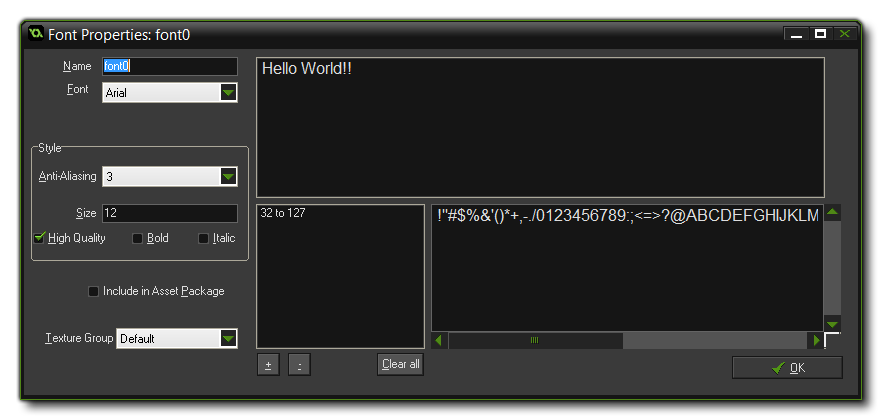
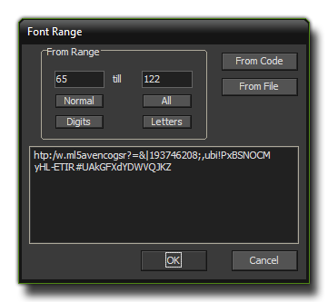

When you want to draw text in your game this text is drawn in a
standard Arial 12 points font, but to make more interesting or
unique looking texts you will probably want to use different fonts,
however. So, to use different fonts that you have on your computer
you must create a font resource in GameMaker: Studio. For
each font resource you specify a particular type of font from your
computer which can then be used in your game using the action
or code
to set a font for drawing to the screen.
To create a font resource in your game, use the item Create
Font in the Resources menu or use the corresponding
button on the toolbar, which will cause the following window to pop
up:  As with all
resources, you should give your font resource a unique name so that
you (and GameMaker: Studio) can identify it while writing
your game. Next you should start selecting the fonts to preview
using the drop-down menu "Font" on the left. Beneath this section
you can set other things like the size and whether the font should
be drawn as bold or italic or have anti-aliasing
(edge smoothing) applied, and you also have the option to use
High Quality fonts, which will use a different rendering
technique for the font glyphs, giving a better, sharper look.
However it should be noted that some fonts may not look better, and
you should experiment with this option to see which you prefer.
The preview window on the right will show you different text ranges
you have selected as they will look with the size and transforms
you have specified, except the anti-aliasing which is not
visible in the preview but will be in your game. Please note that
font scaling (especially from small to large) can give artifacts
when drawn, so try to avoid this where possible. There is also a
check-box labelled "Include In Asset Package. If you are
creating a package of fonts to upload to the Marketplace or to
distribute as part of an extension, then you should tick this
option otherwise the base font files will not be distributed
with the package.
WARNING!: If you include a base font file in this way it must be licensed for distribution.
One final option that you have available to you is the ability to assign your font resource to a texture group. this can be very useful when it comes to optimising the way your game runs and the amount of texture swaps that must be done while the game is being played. for more information on texture groups please see the section Advanced Use - Texture Pages.
NOTE: Due to licensing issues, GameMaker: Studio does not store the fonts with the project file (when the game is finally finished the font is rendered to a texture page, so finished games will draw the text as designed). This means that if you wish to share the *.gmx or a zipped *.gmz file, you must include the font resource that you have used yourself, as not everyone will have the same fonts as you installed on their computer. The only exception to this is when creating asset packages (see above).
A font typically consist of 256 characters, numbered from 0 to 255, but in general you use only a small portion of these. This is why GameMaker: Studio defaults to using only the characters from 32 till 127 are stored in the font. You can, however, change the character range used to help optimise your games ie: If you only need the numbers from a specific font, then only select the numbers. To do this, you should first click the Clear button to clear the current range and then click on the "+" button to add a new range. This will open the following window:  This window has some buttons to help you establish a standard range for your font -
- The Normal range from 32 till 127
- The All range from 0 till 255
- The Digits range that only contains the 10 digits
- The Lettersrange that contains all uppercase and lowercase letters only
Other ranges can be used by typing in the first and last
character index of the range you wish to set in the Character
Range input boxes (If a character does not lie in the range it
is replaced by a space). Apart from these buttons and input boxes,
you also have two further options there especially useful.
The first is the button marked From Code. If you click on
this button and then click OK, GameMaker: Studio will
automatically parse your game code for strings and then create
different character ranges to cover all the text in your game. Note
that it looks for all strings (either within "" or '') and
so may also include file names in the character ranges. However you
can remove any ranges from your font resource using the "-" button
at the bottom of the window and so remove those unwanted
characters.
The second button in this window is marked From File and it
works similarly to that explained above. If you click on it, you
will be asked to supply a file, and then once that is done you
should click on OK. GameMaker: Studio will then parse the
file and create character ranges for the text found within.
It is worth noting is that if you add a font to your game that
doesn't have the glyphs required by the text you wish to write,
then the unicode character 9647 (▯) is used to substitute those
missing glyphs when rendering it in the draw event. So if your font
doesn't have, for example, the ° symbol, then writing 90° will
actually produce 90▯.